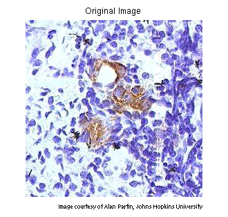
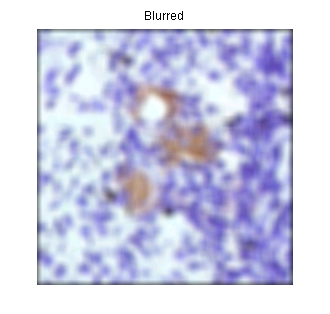
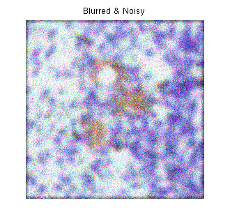
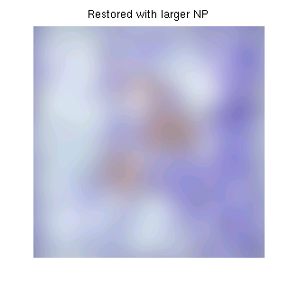
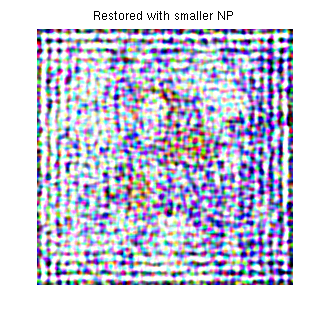
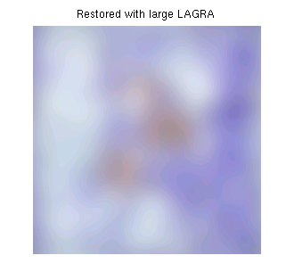
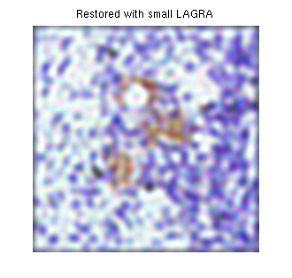
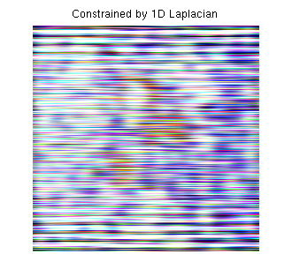

Regularized deconvolution can be used effectively when constraints are applied on the recovered image (e.g., smoothness) and limited information is known about the additive noise. The blurred and noisy image is restored by a constrained least square restoration algorithm that uses a regularized filter.
The example reads in an RGB image and crops it to be 256-by-256-by-3. The deconvreg function can handle arrays of any dimension.
I = imread('tissue.png'); I = I(125+[1:256],1:256,:); figure;imshow(I);title('Original Image'); text(size(I,2),size(I,1)+15, ... 'Image courtesy of Alan Partin, Johns Hopkins University', ... 'FontSize',7,'HorizontalAlignment','right');
Simulate a real-life image that could be blurred (e.g., due to camera motion or lack of focus) and noisy (e.g., due to random disturbances). The example simulates the blur by convolving a Gaussian filter with the true image (using imfilter). The Gaussian filter represents a point-spread function, PSF.
PSF = fspecial('gaussian',11,5); Blurred = imfilter(I,PSF,'conv'); figure;imshow(Blurred); title('Blurred');
We simulate the noise by adding a Gaussian noise of variance V to the blurred image (using imnoise).
V = .02; BlurredNoisy = imnoise(Blurred,'gaussian',0,V); figure;imshow(BlurredNoisy); title('Blurred & Noisy');
Restore the blurred and noisy image supplying noise power, NP, as the third input parameter. To illustrate how sensitive the algorithm is to the value of noise power, NP, the example performs three restorations.
The first restoration, reg1, uses the true NP. Note that the example outputs two parameters here. The first return value, reg1, is the restored image. The second return value, LAGRA, is a scalar, Lagrange multiplier, on which the deconvreg has converged. This value is used later in the demo.
NP = V*prod(size(I)); % noise power [reg1 LAGRA] = deconvreg(BlurredNoisy,PSF,NP); figure,imshow(reg1),title('Restored with NP');
The second restoration, reg2, uses a slightly over-estimated noise power, which leads to a poor resolution.
reg2 = deconvreg(BlurredNoisy,PSF,NP*1.3);
figure;imshow(reg2);
title('Restored with larger NP');The third restoration, reg3, is given an under-estimated NP value. This leads to an overwhelming noise amplification and "ringing" from the image borders.
reg3 = deconvreg(BlurredNoisy,PSF,NP/1.3);
figure;imshow(reg3);
title('Restored with smaller NP');Reduce the noise amplification and "ringing" along the boundary of the image by calling the edgetaper function prior to deconvolution. Note how the image restoration becomes less sensitive to the noise power parameter. Use the noise power value NP from the previous example.
Edged = edgetaper(BlurredNoisy,PSF);
reg4 = deconvreg(Edged,PSF,NP/1.3);
figure;imshow(reg4);
title('Edgetaper effect');Restore the blurred and noisy image, assuming that the optimal solution is already found and the corresponding Lagrange multiplier, LAGRA, is given. In this case, any value passed for noise power, NP, is ignored.
To illustrate how sensitive the algorithm is to the LAGRA value, the example performs three restorations. The first restoration (reg5) uses the LAGRA output from the earlier solution (LAGRA output from first solution in Step 3).
reg5 = deconvreg(Edged,PSF,[],LAGRA);
figure;imshow(reg5);
title('Restored with LAGRA');The second restoration (reg6) uses 100*LAGRA which increases the significance of the constraint. By default, this leads to over-smoothing of the image.
reg6 = deconvreg(Edged,PSF,[],LAGRA*100);
figure;imshow(reg6);
title('Restored with large LAGRA');The third restoration uses LAGRA/100 which weakens the constraint (the smoothness requirement set for the image). It amplifies the noise and eventually leads to a pure inverse filtering for LAGRA = 0.
reg7 = deconvreg(Edged,PSF,[],LAGRA/100);
figure;imshow(reg7);
title('Restored with small LAGRA');Restore the blurred and noisy image using a different constraint (REGOP) in the search for the optimal solution. Instead of constraining the image smoothness (REGOP is Laplacian by default), constrain the image smoothness only in one dimension (1-D Laplacian).
REGOP = [1 -2 1];
reg8 = deconvreg(BlurredNoisy,PSF,[],LAGRA,REGOP);
figure;imshow(reg8);
title('Constrained by 1D Laplacian');